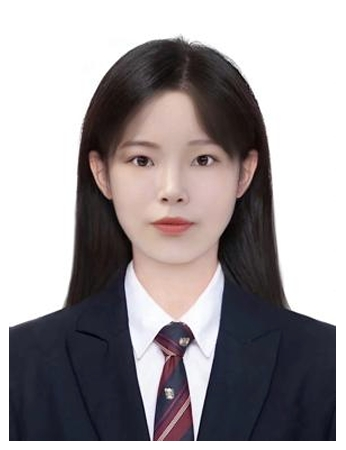

|
School of Law, Guangxi University (Project 211 University) Current Location: Changsha, Hunan Member of the Communist Party of China Email: wuliyuan00@gmail.com GitHub: https://github.com/wuliyuan-00 |
 |
• Major: Law
• Academic Performance: GPA 3.53/4.0
• Class Ranking: 4/39
• Weighted Average Score: 85.96, all course scores above 80
• No make-up or deferred examinations
• English Proficiency: CET-6 (2018)
Major Courses:
Constitutional Law, Administrative Law, Civil Law, Criminal Law, Economic Law, Commercial Law, International Law, Jurisprudence, Philosophy of Law, Legal History, Procedural Law
Minor Courses:
Criminal Investigation, Securities Law
This thesis examines the innovation and improvement of movable property guarantee system in the context of the Civil Code and pandemic-affected small and micro enterprises. Through analyzing registration data of 1,857 SMEs in Wenzhou, Zhejiang, it predicts development trends in movable property financing guarantees following the Civil Code implementation. The research proposes recommendations for building a digital and transparent movable property financing guarantee system.
• Legal Professional Qualification (January 2021)
• Securities Practitioner Qualification (September 2019)
• CET-6 Certificate (2018)
• National Inspirational Scholarship (2019, 2020)
• Outstanding Youth League Member of Guangxi University (2021)
• Legal Professional Qualification "Crown Scholarship" (2021)
• Outstanding Youth League Member Evaluation (2020)
• Second Prize, "Glory of 70 Years, Dream of New Era" University Student Micro-video Contest and Outstanding Research Report (2019)
• Excellence Award, Provincial College Students' Innovation and Entrepreneurship Training Program (2019)
• Silver Award, 5th "Internet+" College Student Innovation and Entrepreneurship Competition (2019)
• Second Prize, FLTRP Cup National English Reading Contest (2017-2019 consecutive three years)
• Second Prize, FLTRP "ETIC Cup" National English Writing Competition (2018-2019)
• Excellence Award, 3rd and 4th National College Student AIDS Prevention Knowledge Competition
Deputy Director, New Media Department, Guangxi University Legal Aid Center (2018.3-2020.5)
• Accumulated 80 hours of legal consultation service
• Provided legal opinions for over 30 cases
• Conducted 14 public legal education sessions on Constitution, Consumer Protection Law, and Labor Law
• Participated in legal advisor training by Nanning Justice Bureau and Guangxi Lawyers Association
• Legal Assistant, Guangxi Dongfang Yiyuan Law Firm (2019.7-2019.8)
• Administrative Assistant, Hunan Jinge New Materials Co., Ltd. (2020.3-2020.6)
• Legal Assistant, Guangxi Jinka Law Firm (2021.1-2021.3)
• Registered National Volunteer (Since 2018.3.25)
• Volunteer Organizations:
• Major Volunteer Activities:
• Total Volunteer Service Hours: 71
• Organization Committee Member, Law School Youth League Branch
• Director, Academic Department of Student Union
• Deputy Director, New Media Department of Legal Aid Center (2019.4-2020.5)
• Vice President, Environmental Protection Association
• Organized "My Favorite Teacher Award Ceremony" (2019)
• Coordinated university-wide "Ocean Knowledge Competition"
• Active participation in Youth League activities
• 100% participation rate in Youth Learning program
• Actively supported class activities as Organization Committee Member
Member of the Communist Party of China
• 専攻：法学
• 学業成績：GPA 3.53/4.0
• 専攻内順位：4/39位
• 加重平均点：85.96点、全科目80点以上
• 追試・再試験歴なし
• 英語能力：大学英語六級試験合格（2018年）
主要科目：
憲法、行政法、民法、刑法、経済法、商法、国際法、法理学、法哲学、法制史、訴訟法等の法学基幹科目
選択科目：
刑事捜査学、証券法等
民法典施行初年度及びパンデミック下における中小零細企業の資金調達問題を背景に、動産担保制度の革新と改善について考察。浙江省温州市の1,857社の中小零細企業の動産抵当登記データを分析し、民法典施行後の動産融資担保の発展傾向を予測：企業選択率の年次上昇、リース融資の銀行融資への優位性、変動担保比率の向上、登記の規範化、融資限度額の増加。デジタル化・透明化された動産融資担保体系の構築に関する提言を行った。
• 法律職業資格（2021年1月取得）
• 証券従業資格（2019年9月取得）
• 大学英語六級証書（2018年取得）
• 国家励志奨学金（2019年度、2020年度）
• 広西大学優秀団員（2021年）
• 法律職業資格試験優秀者奨学金（2021年）
• 優秀団員評価（2020年度）
• 「輝かしい70年、新時代の夢を築く」大学生マイクロビデオコンテスト・優秀調査報告 二等賞（2019年）
• 大学生イノベーション・起業訓練計画 省級プロジェクト優秀賞（2019年）
• 第5回「インターネット+」大学生イノベーション・起業大会 校級選抜銀賞（2019年）
• 全国英語読解コンテスト 二等賞（2017年-2019年連続3年）
• 全国英語作文コンテスト 二等賞（2018年-2019年）
• 第3・4回全国大学生エイズ予防知識コンテスト 優秀賞
広西大学法律支援センター新メディア部副部長（2018年3月-2020年5月）
• 法律相談サービス累計80時間
• 法律意見書作成30件以上
• 憲法、消費者保護法、労働法等の法律普及活動14回実施
• 南寧市司法局、広西弁護士協会主催の村（居）委員会法律顧問研修参加
• 広西東方意遠法律事務所 法務アシスタント（2019年7月-8月）
• 湖南金戈新材料有限公司 総務・機密保持部アシスタント（2020年3月-6月）
• 広西金卡法律事務所 法務アシスタント（2021年1月-3月）
• 全国登録ボランティア（2018年3月25日～現在）
• 所属団体：
• 主な活動：
• ボランティア活動総時間：71時間
• 法学院団支部組織委員
• 広西大学学生会学術部部長
• 法律支援センター新メディア部副部長（2019年4月-2020年5月）
• 環境保護協会副会長
• 「私の好きな先生表彰式」企画運営（2019年）
• 「海洋知識コンテスト」等の全学規模イベント運営
• 共青団活動への積極的参加
• 青年学習プログラム参加率100%
• 組織委員としてクラス活動の企画・運営に貢献
中国共産党党員
• 专业：法学
• 学习成绩：加权平均学分绩点3.53/4
• 专业排名：4/39
• 加权平均分85.96，单科成绩均大于80分
• 无补考缓考记录
• 英语能力：通过英语六级考试（2018年）
主修课程：
宪法、行政法、民法、刑法、经济法、商法、国际法、法理学、法哲学、法史、诉讼法等核心法学课程
辅修课程：
刑事侦查学、证券法学等
本文结合民法典元年和疫情背景下中小微民营企业融资困境，探讨动产担保制度的创新与完善。通过对浙江温州1857家中小微企业动产抵押登记信息的分析，预测了民法典实施后动产融资担保的发展趋势：企业选择率逐年攀升、融资租赁优于银行借贷、浮动担保比例提升、登记规范化、融资额度增长。论文就构建数字化透明化动产融资担保体系提出了完善建议。
• 法律职业资格证（2021年1月通过）
• 证券从业资格证（2019年9月通过）
• 英语六级证书（2018年通过）
• 国家励志奖学金（2019年、2020年）
• 2021年广西大学优秀团员
• 2021年法考"冠律学金"
• 2020年度团员民主评议优秀等次
• 2019年"壮丽70年筑梦新时代"大学生微视频大赛暨优秀调研报告二等奖
• 2019年"大学生创新创业训练计划"省级研究项目优秀奖
• 2019年第五届"互联网+"大学生创新创业大赛校级选拔赛银奖
• "外研社杯"全国英语阅读写作大赛二等奖（2017-2019连续三年）
• "外研社国才杯"全国英语写作大赛二等奖（2018-2019）
• 第三、四届全国大学生防艾滋病知识竞赛优秀奖
2018.3-2020.5 广西大学法律援助中心新网部副部长
• 累计法律援助咨询服务80小时
• 接待当事人出具法律意见书30余起
• 参与宪法、消费者权益保护法、劳动法等公益普法14次
• 参加南宁市司法局、广西律师行业协会的村（居）村委会法律顾问培训会
• 2019.7-2019.8 广西东方意远律师事务所，律师助理
• 2020.3-2020.6 湖南金戈新材料有限公司，综合办公室与保密组助理
• 2021.1-2021.3 广西金卡律师事务所，律师助理
• 全国注册志愿者（2018.3.25至今）
• 志愿服务组织：
• 主要志愿活动：
• 累计志愿服务时长71小时
• 法学院172班团支部组织委员
• 广西大学学生会学术部干事长
• 法律援助中心新网部副部长（2019.4-2020.5）
• 绿色环保协会副会长
• 组织策划"我心目中的好老师颁奖活动"（2019）
• 组织"海洋知识竞赛"等全校性大型活动
• 积极参加"三会两制一课"和团的活动
• 青年大学习参与率100%
• 作为组织委员，积极配合其他班干部组织班级活动
中国共产党党员